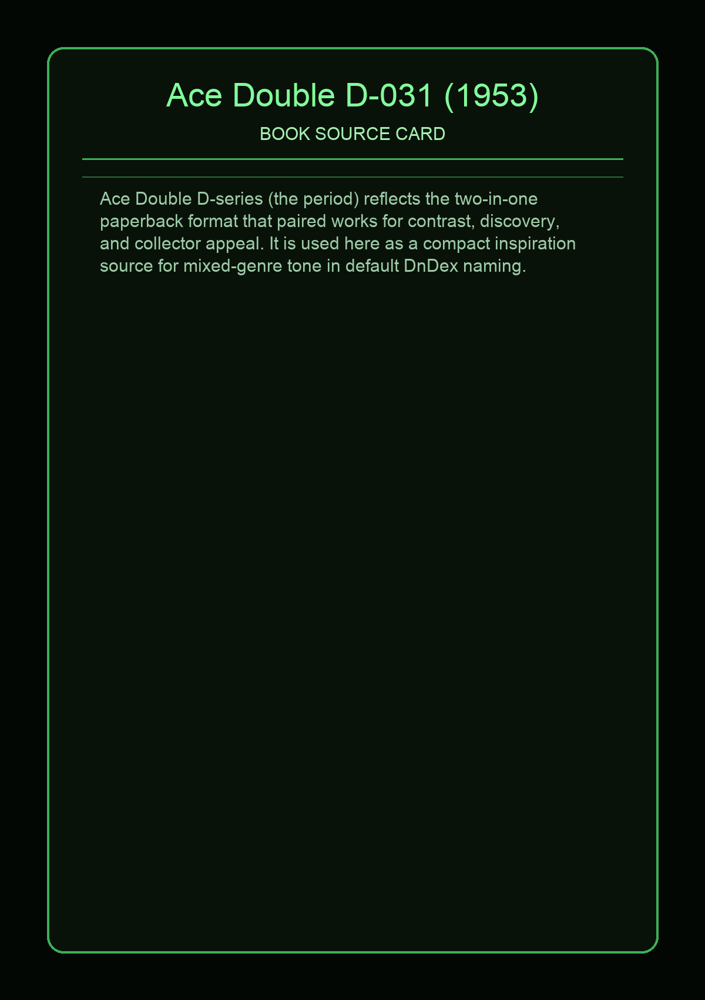

No local photo available for this source yet.
Ace Double D-series (the period) reflects the two-in-one paperback format that paired works for contrast, discovery, and collector appeal. It is used here as a compact inspiration source for mixed-genre tone in default DnDex naming.
This page aggregates references to the source material behind Name Lore entries.